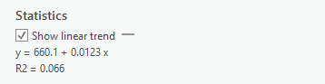
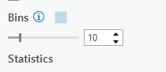

Table of contents
Symbolize Census Data & Plot Relationships
These data layers have three variables: Population (total residents), Housing (monthly rent), and Income (annual total). The Canadian Census collects many different variables. We’ll discuss the census more in depth during lecture in Module 3. For now, lets look at how we can display our data and make some simple graphs.
1 Symbolize your census data by population.
- Change the symbology for Van_DA_2016 to Graduated Colors.
- Set the Field to Population.
- Leave everything else as is for now. We’ll discuss data classification methods in more detail later in term.
2 Create a chart income vs. housing.
- Right click Van_DA_2016 and click Create Chart > Scatter Plot.
- In the chart properties tab set:
- X-axis: Income
- Y-axis: Housing
- Make sure “Show linear trend” is checked to display a regression line on your chart.
3 Note the zero values on the X & Y Axes. Stats Canada “suppresses” data when they don’t get enough responses to a census question. No house in Vancouver is worth $0. We need to exclude the zeros so they don’t skew our results
- In the Map tab, click Select by Attribute, select for “Housing” greater than 0 And “Income” greater than 0.
- Select by Attribute allows us to select rows/objects with a certain attribute.
- It relies on something called a Structured Query Language (SQL).
- We are selecting all rows “Where” our conditions are met.
- Filter your selection from the chart. Note how the R2 value for the line of best fit changes!
A Note on Linear Regression.
A regression line is also know as a “line of best fit”. Linear regression assumes the relationship between an X variable (eg. Income) and a Y variable (eg. Housing) follows a linear relationship (eg. Y=MX + B) where M is the slope and B is the intercept.
- Any deviations from this linear relationship are “errors”. That is, all the other variability that cannot be explained by the model. Rental cost is impacted by many factors (eg. scarcity) that aren’t as easy to capture with census data alone.
- In the example below for Van_DA_2016 (before excluding zeros), M = 0.0123 and b = 660.1, which means at $0 income, rent is $660.1. And for every $100 increase in income, rent goes up $1.23.

The R2 score, is known as the coefficient of determination. It is a measure of how well a model fits the data. It ranges from 0 to 1, with 0 representing “no fit” and 1 representing a “perfect fit”.
- This table shows how we assess the strength of a relationships indicated by the R2 statistics. In the example above, there is no strong relationship.
| R2 | Relationship |
|---|---|
| <0.3 | Very Weak |
| 0.3 - 0.5 | Weak |
| 0.5 - 0.7 | Moderate |
| >0.7 | Strong |
Comparing CTs to DAs
We’ll cover the census units more in depth in Module 3. For now, just know Census Dissemination Areas (DAs) are the smallest census division used by the Canadian Census. They cover the whole country and are generally grouped by municipality (eg. Vancouver) in to Census Subdivisions. Census Tracts (CTs) are larger units that are used to divide Census Metropolitan Areas (urban areas with populations > 100,000).
4 Follow the same steps as above to symbolize population and plot Income vs. Housing for the VanCMA_CT_2016 layer. Don’t forget to exclude the zeros. Note there are fewer zeros overall. Think about why that might be.
5 From here on out, we’ll only be working with the VanDA_2016 layer. You can remove the VanCT_2016 layer from your table of contents so its less cluttered and you don’t get confused.
Visualize and Classify the NDVI Data
To get a feel for the distribution of NDVI values in the dataset, we’re going to plot them in a histogram to aid our visual inspection of the NDVI data.
1 Create a chart showing the count of cells by NDVI values.
- Right click the projected NDVI layer (NDVI layer = Van_Greenest_ProjectRaster) and click Create Chart > Histogram
- Under Variable, set Band_1 as Number. Note what shows up on the chart.
- A histogram represents a distribution by grouping the data into bins (ranges), and plotting the count of values (eg. raster cells) for by bin.
- Change the bin number to see how changing the size of the bins, impacts how you perceive the data. Try 10, then try 50.

2 Change the base map to help inspect the NDVI data.
- On the Map tab click “Basemap” and choose Imagery
- Toggle the NDVI Layer on and off to see how the NDVI values correspond to green vegetation on the visible imagery base map layer.
- Look at the histogram and compare the NDVI layer with the satellite image base map. We can make some inferences about the data. The NDVI values have a bimodal distribution (two peaks) according to the histogram. The peaks correspond to areas dominated by water and dense urban areas (low values) and dense vegetation (high values). Values in-between the peaks represent less dense urban areas, moderate greenery.
Use The Natural Breaks Classification
3 Search for the Reclassify tool in the geoprocessing pane. Use the projected NDVI layer as the input. Name your layer Classification (or reclass if you recieve an error about name length being > 13 characters). Specific names aren’t so important, but the point is to give things a name that makes sense to you.
4 Click classify to set the classification scheme. Set the method to Natural Breaks. This is a method designed to automatically find an “optimal” fit to a dataset. We’ll talk more about classification in Module 3.
- We want to classify (group) the NDVI into three classes (Green Vegetation, Medium Density Residential, Water/Urban), so set the number of classes to 3.